2016
Year Seven - Things are ramping up! May 2016: A look at the railroad at the start of the 2016 season: 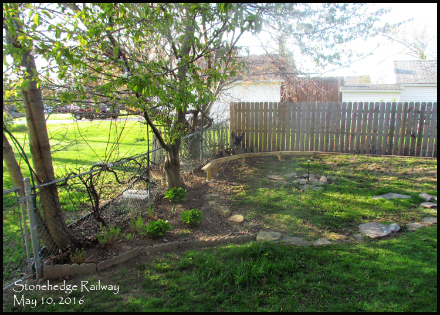 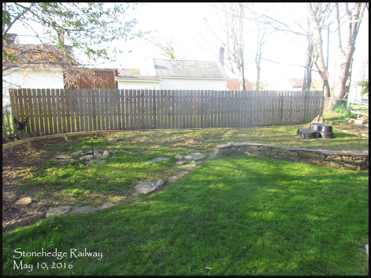 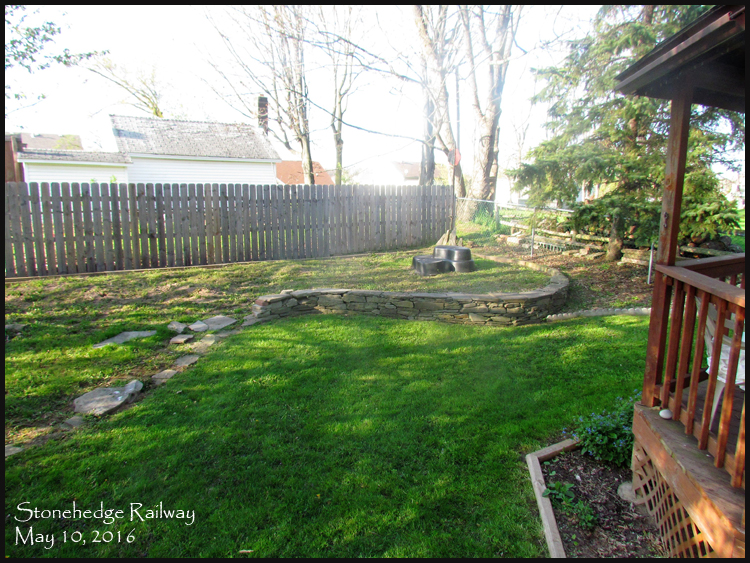 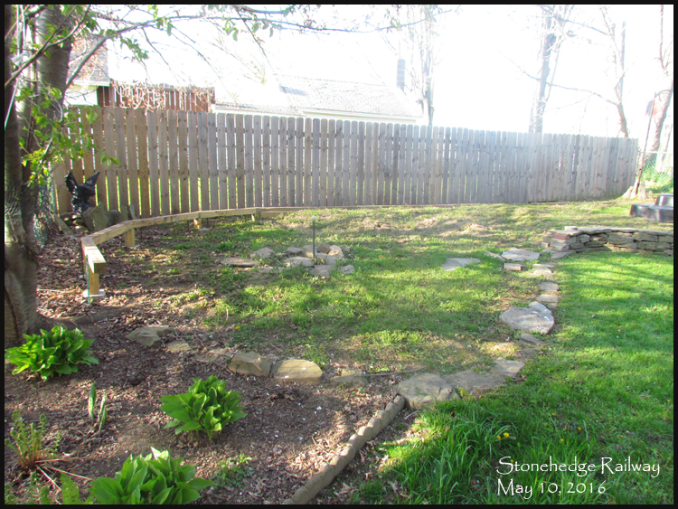 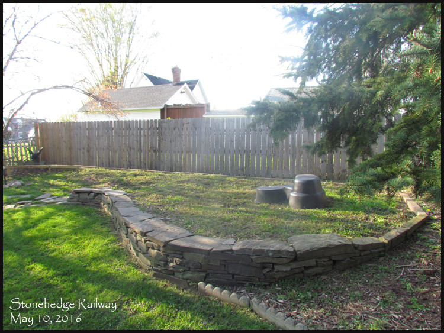 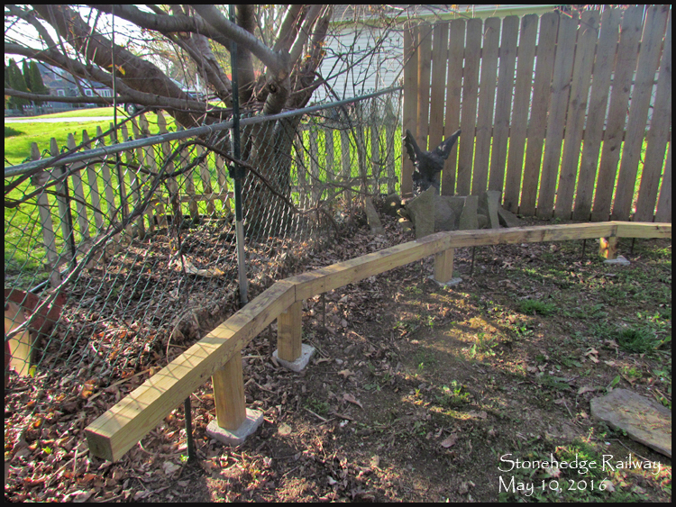 Miss Meadow! new to the family. Like Boots before her, she also likes hanging out with the Gargoyle. 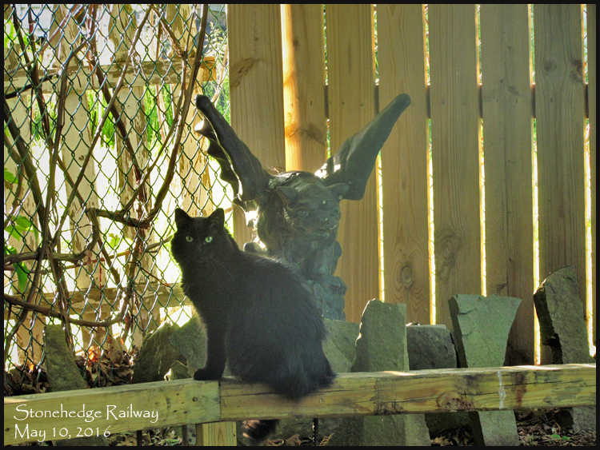 July 2016 - New rocks! 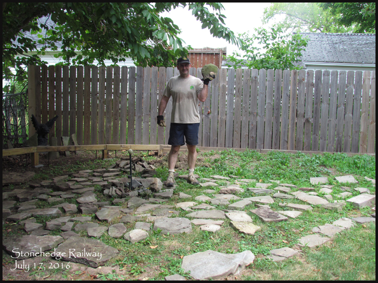 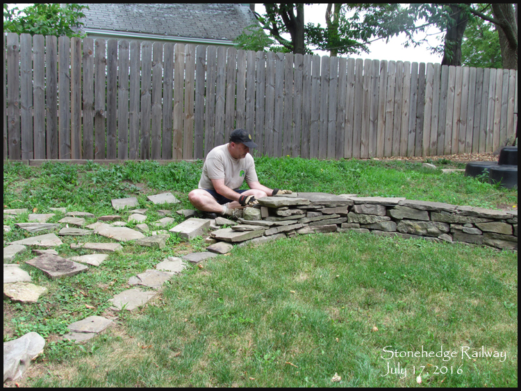 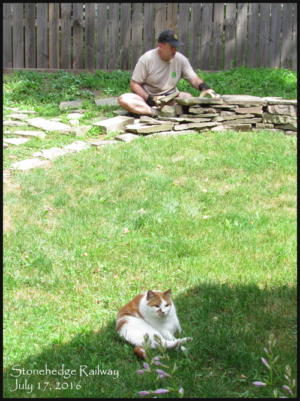 Video 15: A mid-summer look at the railroad, and new rocks! September 2016: A recap from last season, 2015, I was moving dirt with my Wheel Horse tractor: 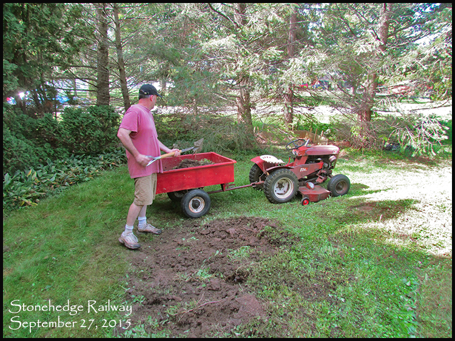 Even though the Wheel Horse is more than capable of handling this job, it's still waaaay too labor-intensive for me! A year later, September 2016, I asked my good neighbor across the street, Dutch, if he would help me move some dirt. He has a much larger John Deere tractor that he uses for mowing and snow plowing, and a front loader! All the dirt was moved in about 30 minutes: 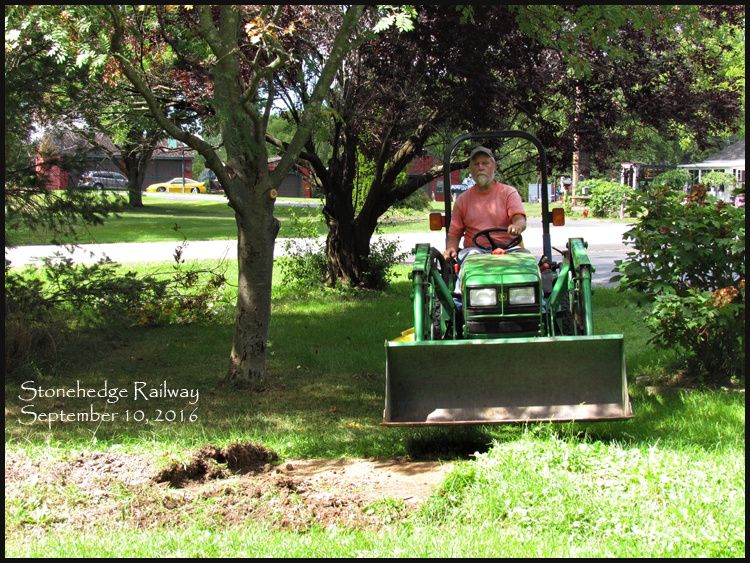 That's more like it! 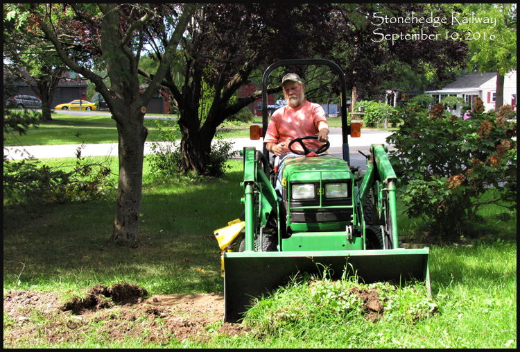 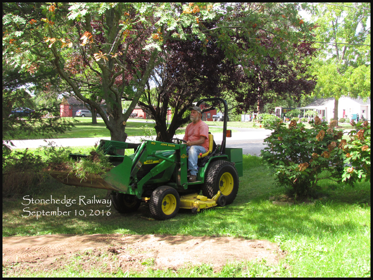 Raised bed removed, returned to flat lawn: 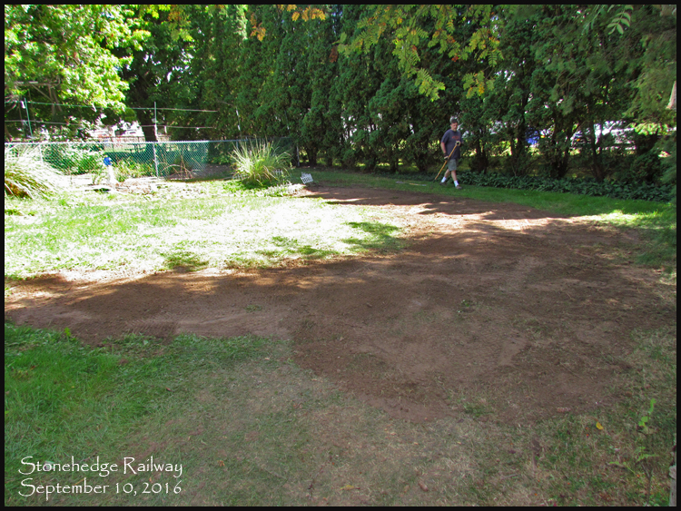 And a new big pile of dirt, ready to be used as fill in the garden railroad! 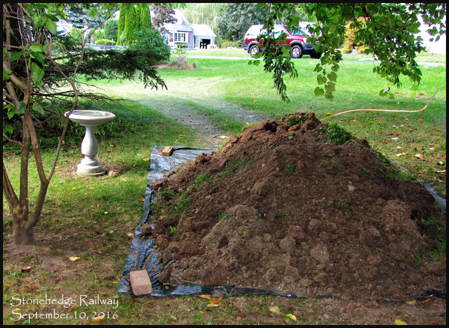 Video 16. October 2016, End of year recap: |
||
 |